토목기사 (2018-03-04 기출문제)
1과목: 응용역학
1. 같은 재료로 만들어진 반경 r인 속이 찬 축과 외반경 r이고 내반경 0.6r인 속이 빈 축이 동일크기의 비틀림 모멘트를 받고 있다. 최대 비틀림 응력의 비는?
- 1：1
- 1：1.15
- 1：2
- 1：2.15
(정답률: 78%)

2. 다음 단면에서 y축에 대한 회전반지름은?
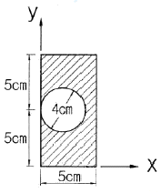
- 3.07cm
- 3.20cm
- 3.81cm
- 4.24cm
(정답률: 50%)
3. 반지름이 25cm인 원형단면을 가지는 단주에서 핵의 면적은 약 얼마인가?
- 122.7cm2
- 168.4cm2
- 254.4cm2
- 336.8cm2
(정답률: 69%)
4. 그림과 같은 단순보에서 최대휨모멘트가 발생하는 위치 x(A점으로부터의 거리)와 최대휨모멘트 Mx는?
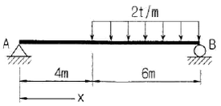
- x＝4.0m, Mx＝18.02tㆍm
- x＝4.8m, Mx＝9.6tㆍm
- x＝5.2m, Mx＝23.04tㆍm
- x＝5.8m, Mx＝17.64tㆍm
(정답률: 56%)
5. 그림과 같은 보에서 다음 중 휨모멘트의 절대 값이 가장 큰 곳은?
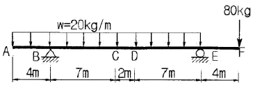
- B점
- C점
- D점
- E점
(정답률: 63%)
6. 정6각형 틀의 각 절점에 그림과 같이 하중 P가 작용할 때 각 부재에 생기는 인장응력의 크기는?
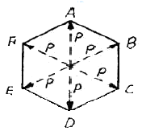
- P
- 2P
- P/2
- P/√2
(정답률: 69%)
7. 단면이 원형(반지름 r)인 보에 휨모멘트 M이 작용할 때 이 보에 작용하는 최대휨응력은?
- 2M/πr3
- 4M/πr3
- 8M/πr3
- 16M/πr3
(정답률: 68%)
8. 다음 그림과 같은 구조물의 BD 부재에 작용하는 힘의 크기는?
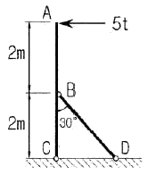
- 10t
- 12.5t
- 15t
- 20t
(정답률: 49%)
9. 그림과 같은 단면에 1000kg의 전단력이 작용할 때 최대 전단응력의 크기는?
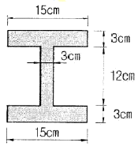
- 23.5kg/cm2
- 28.4kg/cm2
- 35.2kg/cm2
- 43.3kg/cm2
(정답률: 59%)
10. 그림과 같은 뼈대 구조물에서 C점의 수직반력(↑)을 구한 값은? (단, 탄성계수 및 단면은 전부재가 동일)
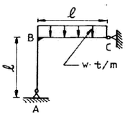
- 9Wℓ/16
- 7Wℓ/16
- Wℓ/8
- Wℓ/16
(정답률: 48%)
11. 다음 그림과 같은 T형 단면에서 도심축 C-C축의 위치 X는?
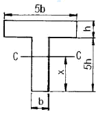
- 2.5h
- 3.0h
- 3.5h
- 4.0h
(정답률: 64%)
12. 다음 그림과 같이 A지점이 고정이고 B지점이 힌지(hinge)인 부정정보가 어떤 요인에 의하여 B지점이 Bʹ로 만큼 침하하게 되었다. 이때 Bʹ의 지점반력은?
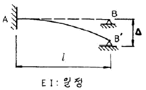
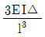
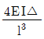
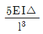
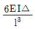
(정답률: 49%)
13. 그림과 같은 트러스의 상현재U의 부재력은?
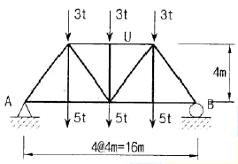
- 인장을 받으며 그 크기는 16t이다.
- 압축을 받으며 그 크기는 16t이다.
- 인장을 받으며 그 크기는 12t이다.
- 압축을 받으며 그 크기는 12t이다.
(정답률: 62%)
14. 그림과 같은 단면적 A, 탄성계수 E인 기둥에서 줄음량을 구한 값은?
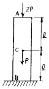
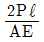
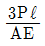
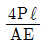
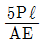
(정답률: 55%)
15. 다음 그림과 같은 보에서 두 지점의 반력이 같게 되는 하중의 위치(x)를 구하면?
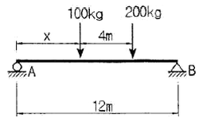
- 0.33m
- 1.33m
- 2.33m
- 3.33m
(정답률: 69%)
16. 그림과 같은 게르버보에서 하중 P만에 의한 C점의 처짐은? (단, EI는 일정하고 EI=2.7×1011kgㆍcm2이다.)
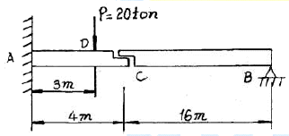
- 2.7cm
- 2.0cm
- 1.0cm
- 0.7cm
(정답률: 48%)
17. 탄성변형에너지는 외력을 받는 구조물에서 변형에 의해 구조물에 축적되는 에너지를 말한다. 탄성체이며 선형거동을 하는 길이 L인 캔틸레버보의 끝단에 집중하중 P가 작용할 때 굽힘모멘트에 의한 탄성변형에너지는? (단, EI는 일정)
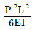
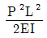
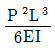
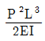
(정답률: 69%)
18. 중공 원형 강봉에 비틀림력 T가 작용할 때 최대 전단 변형율 γmax=750×10-6rad으로 측정되었다. 봉의 내경은 60mm이고 외경은 75mm일 때 봉에 작용하는 비틀림력 T를 구하면? (단, 전단탄성계수 G=8.15×105kg/cm2)
- 29.9tㆍcm
- 32.7tㆍcm
- 35.3tㆍcm
- 39.2tㆍcm
(정답률: 37%)
19. 그림과 같은 구조물에서 C점의 수직처짐을 구하면? (단, EI=2×109kgㆍcm2이며 자중은 무시한다.)
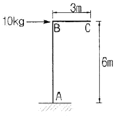
- 2.7mm
- 3.6mm
- 5.4mm
- 7.2mm
(정답률: 49%)
20. 다음과 같은 3활절 아치에서 C점의 휨모멘트는?
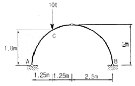
- 3.25tㆍm
- 3.50tㆍm
- 3.75tㆍm
- 4.00tㆍm
(정답률: 70%)
2과목: 측량학
21. 직사각형의 가로, 세로의 거리가 그림과 같다. 면적 A의 표현으로 가장 적절한 것은?
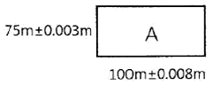
- 7500m2±0.67m2
- 7500m2±0.41m2
- 7500.9m2±0.67m2
- 7500.9m2±0.41m2
(정답률: 55%)
22. 하천측량을 실시하는 주목적에 대한 설명으로 가장 적합한 것은?
- 하천 개수공사나 공작물의 설계, 시공에 필요한 자료를 얻기 위하여
- 유속 등을 관측하여 하천의 성질을 알기 위하여
- 하천의 수위, 기울기, 단면을 알기 위하여
- 평면도, 종단면도를 작성하기 위하여
(정답률: 61%)
23. 30m당 0.03m가 짧은 줄자를 사용하여 정사각형 토지의 한 변을 측정한 결과 150m이었다면 면적에 대한 오차는?
- 41m2
- 43m2
- 45m2
- 47m2
(정답률: 60%)
24. 지반의 높이를 비교할 때 사용하는 기준면은?
- 표고(elevation)
- 수준면(level surface)
- 수평면(horizontal plane)
- 평균해수면(mean sea level)
(정답률: 56%)
25. 클로소이드 곡선에서 곡선 반지름(R)＝450m, 매개변수(A)＝300m일 때 곡선길이(L)는?
- 100m
- 150m
- 200m
- 250m
(정답률: 63%)
26. 등고선의 성질에 대한 설명으로 옳지 않은 것은?
- 등고선은 도면 내외에서 폐합하는 폐곡선이다.
- 등고선은 분수선과 직각으로 만난다.
- 동굴 지형에서 등고선은 서로 만날 수 있다.
- 등고선의 간격은 경사가 급할수록 넓어진다.
(정답률: 67%)
27. 축척 1：25000 지형도에서 거리가 6.73cm인 두 점 사이의 거리를 다른 축척의 지형도에서 측정한 결과 11.21cm이었다면 이 지형도의 축척은 약 얼마인가?
- 1：20000
- 1：18000
- 1：15000
- 1：13000
(정답률: 58%)
28. 트래버스측량(다각측량)에 관한 설명으로 옳지 않은 것은?
- 트래버스 중 가장 정밀도가 높은 것은 결합 트래버스로서 오차점검이 가능하다.
- 폐합 오차 조정에서 각과 거리측량의 정확도가 비슷한 경우 트랜싯 법칙으로 조정하는 것이 좋다.
- 오차의 배분은 각 관측의 정확도가 같을 경우 각의 대소에 관계없이 등분하여 배분한다.
- 폐합 트래버스에서 편각을 관측하면 편각의 총합은 언제나 360°가 되어야 한다.
(정답률: 57%)
29. 수심 H인 하천의 유속측정에서 수면으로부터 깊이 0.2H, 0.6H, 0.8H인 점의 유속이 각각 0.663m/s, 0.532m/s, 0.467m/s 이었다면 3점법에 의한 평균유속은?
- 0.565m/s
- 0.554m/s
- 0.549m/s
- 0.543m/s
(정답률: 62%)
30. 교점(I.P)은 도로 기점에서 500m의 위치에 있고 교각 I＝36°일 때 외선길이(외할)＝5.00m라면 시단현의 길이는? (단, 중심말뚝거리는 20m이다.)
- 10.43m
- 11.57m
- 12.36m
- 13.25m
(정답률: 48%)
31. 사진측량의 특징에 대한 설명으로 옳지 않은 것은?
- 기상조건에 상관없이 측량이 가능하다.
- 정량적 관측이 가능하다.
- 측량의 정확도가 균일하다.
- 정성적 관측이 가능하다.
(정답률: 64%)
32. 단일삼각형에 대해 삼각측량을 수행한 결과 내각이α=54°25ʹ32ʺ, β=68°43ʹ23ʺ, γ=56°51ʹ14ʺ이었다면 β의 각 조건에 의한 조정량은?
- －4ʺ
- －3ʺ
- ＋4ʺ
- ＋3ʺ
(정답률: 63%)
33. 그림과 같이 4개의 수준점 A, B, C, D에서 각각 1km, 2km, 3km, 4km 떨어진 P점의 표고를 직접 수준 측량한 결과가 다음과 같을 때 P점의 최확값은?
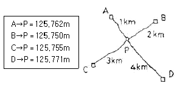
- 125.755m
- 125.759m
- 125.762m
- 125.765m
(정답률: 63%)
34. GNSS 관측성과로 틀린 것은?
- 지오이드 모델
- 경도와 위도
- 지구중심좌표
- 타원체고
(정답률: 46%)
35. 삼각망의 종류 중 유심삼각망에 대한 설명으로 옳은 것은?
- 삼각망 가운데 가장 간단한 형태이며 측량의 정확도를 얻기 위한 조건이 부족하므로 특수한 경우 외에는 사용하지 않는다.
- 가장 높은 정확도를 얻을 수 있으나 조정이 복잡하고, 포함된 면적이 작으며 특히 기선을 확대할 때 주로 사용한다.
- 거리에 비하여 측점수가 가장 적으므로 측량이 간단하며 조건식의 수가 적어 정확도가 낮다.
- 광대한 지역의 측량에 적합하며 정확도가 비교적 높은 편이다.
(정답률: 52%)
36. 다음은 폐합 트래버스 측량성과이다. 측선 CD의 배횡거는?
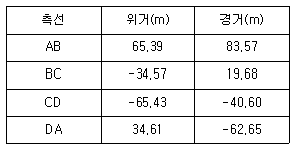
- 60.25m
- 115.90m
- 135.45m
- 165.90m
(정답률: 58%)
37. 어떤 횡단면의 도상면적이 40.5cm2이었다. 가로 축척이 1:20, 세로 축척이 1：60이었다면 실제면적은?
- 48.6m2
- 33.75m2
- 4.86m2
- 3.375m2
(정답률: 55%)
38. 동일한 지역을 같은 조건에서 촬영할 때, 비행고도만을 2배로 높게 하여 촬영할 경우 전체 사진 매수는?
- 사진 매수는 1/2만큼 늘어난다.
- 사진매수는 1/2만큼 줄어든다.
- 사진매수는 1/4만큼 늘어난다.
- 사진매수는 1/4만큼 줄어든다.
(정답률: 47%)
39. 중심말뚝의 간격이 20m인 도로구간에서 각 지점에 대한 횡단면적을 표시한 결과가 그림과 같을 때, 각주공식에 의한 전체 토공량은?
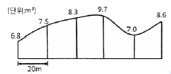
- 156m3
- 672m3
- 817m3
- 920m3
(정답률: 48%)
40. 노선측량에 대한 용어 설명 중 옳지 않은 것은?
- 교점 - 방향이 변하는 두 직선이 교차하는 점
- 중심말뚝 - 노선의 시점, 종점 및 교점에 설치하는 말뚝
- 복심곡선 - 반지름이 서로 다른 두 개 또는 그 이상의 원호가 연결된 곡선으로 공통접선 의 같은 쪽에 원호의 중심이 있는 곡선
- 완화곡선 - 고속으로 이동하는 차량이 직선부에서 곡선부로 진입할 때 차량의 원심력을 완화하기 위해 설치하는 곡선
(정답률: 55%)
3과목: 수리학 및 수문학
41. 수리학에서 취급되는 여러 가지 양에 대한 차원이 옳은 것은?
- 유량=[L3T-1]
- 힘=[MLT-3]
- 동점성계수=[L3T-1]
- 운동량=[MLT-2]
(정답률: 47%)
42. 폭이 b인 직사각형 위어에서 접근유속이 작은 경우 월류수심이 h일 때 양단수축 조건에서 월류수맥에 대한 단수축 폭(b0)은? (단, Francis공식을 적용)
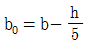
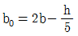
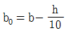
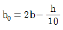
(정답률: 54%)
43. 누가우량곡선(Rainfall mass curve)의 특성으로 옳은 것은?
- 누가우량곡선의 경사가 클수록 강우강도가 크다.
- 누가우량곡선의 경사는 지역에 관계없이 일정하다.
- 누가우량곡선으로 일정기간내의 강우량을 산출할 수는 없다.
- 누가우량곡선은 자기우량 기록에 의하여 작성하는 것보다 보통우량계의 기록에 의하여 작성하는 것이 더 정확하다.
(정답률: 61%)
44. 폭 4.8m, 높이 2.7m의 연직 직사각형 수문이 한쪽 면에서 수압을 받고 있다. 수문의 밑면은 힌지로 연결되어 있고 상단은 수평체인(Chain)으로 고정되어 있을 때 이 체인에 작용하는 장력(張力)은? (단, 수문의 정상과 수면은 일치한다.)
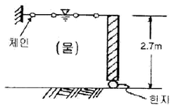
- 29.23kN
- 57.15kN
- 7.87kN
- 0.88kN
(정답률: 41%)
45. 어느 소유역의 면적이 20ha, 유수의 도달시간이 5분이다. 강수자료의 해석으로부터 얻어진 이 지역의 강우강도식이 아래와 같을 때 합리식에 의한 홍수량은? (단, 유역의 평균 유출계수는 0.6이다.)
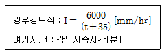
- 18.0m3/s
- 5.0m3/s
- 1.8m3/s
- 0.5m3/s
(정답률: 55%)
46. 비력(special force)에 대한 설명으로 옳은 것은?
- 물의 충격에 의해 생기는 힘의 크기
- 비에너지가 최대가 되는 수심에서의 에너지
- 한계수심으로 흐를 때 한 단면에서의 총 에너지 크기
- 개수로의 어떤 단면에서 단위중량당 운동량과 정수압의 합계
(정답률: 40%)
47. 지름이 20cm인 관수로에 평균유속 5m/s로 물이 흐른다. 관의 길이가 50m일 때 5m의 손실수두가 나타났다면, 마찰속도(U*)는?
- U*＝0.022m/s
- U*=0.22m/s
- U*＝2.21m/s
- U*＝22.1U*
(정답률: 46%)
48. 항만을 설계하기 위해 관측한 불규칙 파랑의 주기 및 파고가 다음 표와 같을 때, 유의파고(H1/3)는?
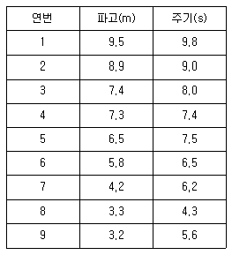
- 9.0m
- 8.6m
- 8.2m
- 7.4m
(정답률: 47%)
49. 비에너지와 한계수심에 관한 설명으로 옳지 않은 것은?
- 비에너지가 일정할 때 한계수심으로 흐르면 유량이 최소가 된다.
- 유량이 일정할 때 비에너지가 최소가 되는 수심이 한계수심이다.
- 비에너지는 수로바닥을 기준으로 하는 단위 무게당 흐름에너지이다.
- 유량이 일정할 때 직사각형단면 수로내 한계수심은 최소 비에너지의 2/3이다.
(정답률: 50%)
50. 토양면을 통해 스며든 물이 중력의 영향 때문에 지하로 이동하여 지하수면까지 도달하는 현상은?
- 침투(infiltration)
- 침투능(infiltration capacity)
- 침투율(infiltration rate)
- 침루(percolation)
(정답률: 61%)
51. 오리피스(orifice)의 이론유속 V=√2gh이 유도되는 이론으로 옳은 것은? (단, V：유속, g：중력가속도, h：수두차)
- 베르누이(Bernoulli)의 정리
- 레이놀즈(Reynolds)의 정리
- 벤츄리(Venturi)의 이론식
- 운동량 방정식 이론
(정답률: 62%)
52. 3차원 흐름의 연속방정식을 아래와 같은 형태로 나타낼 때 이에 알맞은 흐름의 상태는?
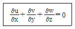
- 비압축성 정상류
- 비압축성 부정류
- 압축성 정상류
- 압축성 부정류
(정답률: 57%)
53. 동력 20000 kW, 효율 88%인 펌프를 이용하여 150m 위의 저수지로 물을 양수하려고 한다. 손실수두가 10m일 때 양수량은?
- 15.5m3/s
- 14.5m3/s
- 11.2m3/s
- 12.0m3/s
(정답률: 53%)
54. 측정된 강우량 자료가 기상학적 원인 이외에 다른 영향을 받았는지의 여부를 판단하는, 즉 일관성(consistency)에 대한 검사방법은?
- 순간 단위 유량도법
- 합성 단위 유량도법
- 이중 누가 우량 분석법
- 선행 강수 지수법
(정답률: 71%)
55. 레이놀즈(Reynolds) 수에 대한 설명으로 옳은 것은?
- 중력에 대한 점성력의 상대적인 크기
- 관성력에 대한 점성력의 상대적인 크기
- 관성력에 대한 중력의 상대적인 크기
- 압력에 대한 탄성력의 상대적인 크기
(정답률: 63%)
56. 하천의 모형실험에 주로 사용되는 상사법칙은?
- Reynolds의 상사법칙
- Weber의 상사법칙
- Cauchy의 상사법칙
- Froude의 상사법칙
(정답률: 60%)
57. Darcy의 법칙에 대한 설명으로 옳지 않은 것은?
- Darry의 법칙은 지하수의 흐름에 대한 공식이다.
- 투수계수는 물의 점성계수에 따라서도 변화한다.
- Reynolds수가 클수록 안심하고 적용할 수 있다.
- 평균유속이 동수경사와 비례관계를 가지고 있는 흐름에 적용될 수 있다.
(정답률: 64%)
58. A저수지에서 200m 떨어진 B저수지로 지름 20cm, 마찰손실계수 0.035인 원형관으로 0.0628m3/s의 물을 송수하려고 한다. A저수지와 B저수지 사이의 수위차는? (단, 마찰손실, 단면급확대 및 급축소 손실을 고려한다.)
- 5.75m
- 6.94m
- 7.14m
- 7.45m
(정답률: 32%)
59. 다음 중 단위유량도 이론에서 사용하고 있는 기본가정이 아닌 것은?
- 일정 기저시간 가정
- 비례가정
- 푸아송 분포 가정
- 중첩가정
(정답률: 63%)
60. 배수곡선(backwater curve)에 해당하는 수면곡선은?
- 댐을 월류할 때의 수면곡선
- 홍수시의 하천의 수면곡선
- 하천 단락부(段落部) 상류의 수면곡선
- 상류 상태로 흐르는 하천에 댐을 구축했을 때 저수지의 수면곡선
(정답률: 45%)
4과목: 철근콘크리트 및 강구조
61. 계수전단력(Vu)이 262.5kN일 때 아래 그림과 같은 보에서 가장 적당한 수직스터럽의 간격은? (단, 사용된 스터럽은 D13을 사용하였으며, D13철근의 단면적은 127mmcm2, fck=28MPa, fy=400MPa이다.)(오류 신고가 접수된 문제입니다. 반드시 정답과 해설을 확인하시기 바랍니다.)
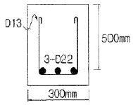
- 195
- 201mm
- 233mm
- 265mm
(정답률: 40%)
62. 강도설계법에서 사용하는 강도감소계수(ø)의 값으로 틀린 것은?
- 무근콘크리트의 휨모멘트 ： ø=0.55
- 전단력과 비틀림모멘트 ： ø=0.75
- 콘크리트의 지압력 ： ø=0.70
- 인장지배단면 ：ø=0.85
(정답률: 50%)
63. 아래 그림의 지그재그로 구멍이 있는 판에서 순폭을 구하면? (단, 구멍직경은 25mm)
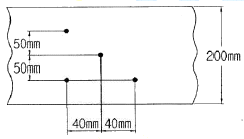
- 187mm
- 141mm
- 137mm
- 125mm
(정답률: 58%)
64. 그림과 같은 복철근 보의 유효깊이(d)는? (단, 철근 1개의 단면적은 250mm2이다.)
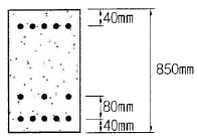
- 810mm
- 780mm
- 770mm
- 730mm
(정답률: 54%)
65. 프리스트레스 감소 원인 중 프리스트레스 도입 후 시간의 경과에 따라 생기는 것이 아닌 것은?
- PC강재의 릴랙세이션
- 콘크리트의 건조수축
- 콘크리트의 크리프
- 정착 장치의 활동
(정답률: 57%)
66. Mu=200kN·m의 계수모멘트가 작용하는 단철근 직사각형보에서 필요한 철근량(As)은 약 얼마인가? (단, b＝300mm, d＝500mm, fck= 28MPa, fy=400MPa, ø=0.85이다.)
- 1072.7mm2
- 1266.3mm2
- 1524.6mm2
- 1785.4mm2
(정답률: 46%)
67. 용접 시의 주의 사항에 관한 설명 중 틀린 것은?
- 용접의 열을 될 수 있는 대로 균등하게 분포 시킨다.
- 용접부의 구속을 될 수 있는 대로 적게 하여 수축변형을 일으키더라도 해로운 변형이 남지 않도록 한다.
- 평행한 용접은 같은 방향으로 동시에 용접하는 것이 좋다.
- 주변에서 중심으로 향하여 대칭으로 용접해 나간다.
(정답률: 57%)
68. 그림의 PSC 콘크리트보에서 PS강재를 포물선으로 배치하여 프리스트레스 P＝1000kN이 작용할 때 프리스트레스의 상향력은? (단, 보 단면은 b=300mm, h=600mm이고, s=250mm이다.)
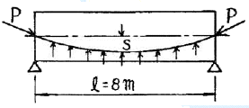
- 51.65kN/m
- 41.76kN/m
- 31.25kN/m
- 21.38kN/m
(정답률: 51%)
69. 철근 콘크리트 보에 배치되는 철근의 순간격에 대한 설명으로 틀린 것은?
- 동일 평면에서 평행한 철근 사이의 수평 순간격은 25mm이상이어야 한다.
- 상단과 하단에 2단 이상으로 배치된 경우 상하 철근의 순간격은 25mm이상으로 하여야 한다.
- 철근의 순간격에 대한 규정은 서로 접촉된 걸침이음 철근과 인접된 이음철근 또는 연속 철근 사이의 순간격에도 적용하여야 한다.
- 벽체 또는 슬래브에서 힘 주철근의 간격은 벽체나 슬래브 두께의 2배 이하로 하여야 한다.
(정답률: 43%)
70. As=4000mm2, As′=1500mm2로 배근된 그림과 같은 복철근 보의 탄성처짐이 15mm이다. 5년 이상의 지속하중에 의해 유발되는 장기처짐은 얼마인가?
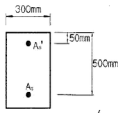
- 15mm
- 20mm
- 25mm
- 30mm
(정답률: 56%)
71. 아래의 표와 같은 조건의 경량콘크리트를 사용하고, 설계기준항복강도가 400MPa인 D25(공칭직경：25.4mm)철근을 인장철근으로 사용하는 경우 기본정착길이(ldb)는?
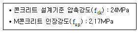
- 1430mm
- 1515mm
- 1535mm
- 1575mm
(정답률: 40%)
72. 아래 그림과 같은 단철근 직사각형보가 공칭 휨강도(Mn)에 도달할 때 인장철근의 변형률은 얼마인가? (단, 철근 D22 4개의 단면적 1548mm2, fck=35MPa, fy=400MPa)(오류 신고가 접수된 문제입니다. 반드시 정답과 해설을 확인하시기 바랍니다.)
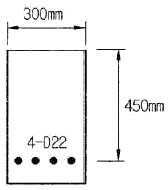
- 0.0102
- 0.0126
- 0.0186
- 0.0198
(정답률: 52%)
73. 다음 중 적합비틀림에 대한 설명으로 옳은 것은?
- 균열의 발생 후 비틀림모멘트의 재분배가 일어날 수 없는 비틀림
- 균열의 발생 후 비틀림모멘트의 재분배가 일어날 수 있는 비틀림
- 균열의 발생 전 비틀림모멘트의 재분배가 일어날 수 없는 비틀림
- 균열의 발생 전 비틀림모멘트의 재분배가 일어날 수 있는 비틀림
(정답률: 52%)
74. 그림과 같은 용접부의 응력은?
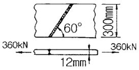
- 115MPa
- 110MPa
- 100MPa
- 94MPa
(정답률: 63%)
75. 콘크리트의 강도설계에서 등가 직사각형 응력블록의 깊이 a=β1c로 표현할 수 있다. fck가 60MPa인 경우 β1의 값은 얼마인가?
- 0.85
- 0.732
- 0.65
- 0.626
(정답률: 49%)
76. 철근의 부착응력에 영향을 주는 요소에 대한 설명으로 틀린 것은?
- 경사인장균열이 발생하게 되면 철근이 균열에 저항하게 되고, 따라서 균열면 양쪽의 부착응력을 증가시키기 때문에 결국 인장철근의 응력을 감소시킨다.
- 거푸집 내에 타설된 콘크리트의 상부로 상승하는 물과 공기는 수평으로 놓인 철근에 의해 가로막히게 되며, 이로 인해 철근과 철근 하단에 형성될 수 있는 수막 등에 의해 부착력이 감소될 수 있다.
- 전단에 의한 인장철근의 장부력(dowel force)은 부착에 의한 쪼갤 응력을 증가시킨다.
- 인장부 철근이 필요에 의해 절단되는 불연속 지점에서는 철근의 인장력 변화정도가 매우 크며 부착응력 역시 증가한다.
(정답률: 39%)
77. 주어진 T형 단면에서 부착된 프리스트레스트 보강재의 인장응력(fps)은 얼마인가? (단, 긴장재의 단면적 Aps=1290mm2 이고, 프리스트레싱 긴장재의 종류에 따른 계수 γp=0.4, 긴장재의 설계기준 인장강도 fpu=1900MPa, fck=35MPa)
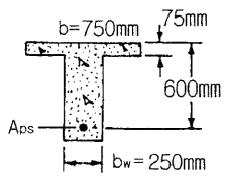
- 1900MPa
- 1861MPa
- 1804MPa
- 1752MPa
(정답률: 25%)
78. 아래 그림과 같은 보통 중량콘크리트 직사각형 단면의 보에서 균열모멘트(Mcr)는? (단, fck=24MPa이다.)
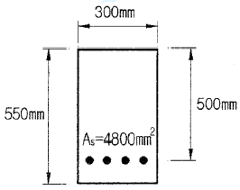
- 46.7kN·m
- 52.3kN·m
- 56.4kN·m
- 62.1kN·m
(정답률: 51%)
79. 그림의 T형보에서 fck=28MPa, fy=400MP일때 공칭모멘트강도(Mn)를 구하면? (단,As=5000mm2)
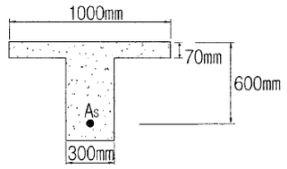
- 1110.5kN·m
- 1251.0KN·m
- 1372.5kN·m
- 1434.0kN·m
(정답률: 50%)
80. 서로 다른 크기의 철근을 압축부에서 겹침이음하는 경우 이음길이에 대한 설명으로 옳은 것은?
- 이음길이는 크기가 큰 철근의 정착길이와 크기가 작은 철근의 겹침이음길이 중 큰 값 이상이어야 한다.
- 이음길이는 크기가 작은 철근의 정착길이와 크기가 큰 철근의 겹침이음길이 중 작은 값 이상이어야 한다.
- 이음길이는 크기가 작은 철근의 정착길이와 크기가 큰 철근의 겹침이음길이의 평균값 이상이어야 한다.
- 이음길이는 크기가 큰 철근의 정착길이와 크기가 작은 철근의 겹침이음길이를 합한 값 이상이어야 한다.
(정답률: 45%)
5과목: 토질 및 기초
81. 흙 시료의 전단파괴면을 미리 정해놓고 흙의 강도를 구하는 시험은?
- 직접전단시험
- 평판재하시험
- 일축압축시험
- 삼축압축시험
(정답률: 54%)
82. 포화된 지반의 간극비를 e, 함수비를 w, 간극률을 n, 비중을 Gs : 라 할 때 다음 중 한계 동수 경사를 나타내는 식으로 적절한 것은?
- Gs+1/1+e
- e-w/w(1+e)
- (1+n)(Gs-1)
- Gs(1-w+e)/(1+Gs)(1+e)
(정답률: 46%)
83. 4.75mm체(4번 체) 통과율이 90%이고, 0.075mm체(200번 체) 통과율이 4%, D10=0.25mm, D30=0.6mm, D60=2mm인 흙을 통일분류법으로 분류하면?
- GW
- GP
- SW
- SP
(정답률: 37%)
84. 아래 그림에서 토압계수 K＝0.5일 때의 응력경로는 어느 것인가?
- ㉮
- ㉯
- ㉰
- ㉱
(정답률: 52%)
85. 아래 그림과 같은 폭(B) 1.2m, 길이(L) 1.5m인 사각형 얕은 기초에 폭(B) 방향에 대한 편심이 작용하는 경우 지반에 작용하는 최대압축응력은?
- 29.2t/m2
- 38.5t/m2
- 39.7t/m2
- 41.5t/m2
(정답률: 36%)
86. 어떤 점토의 압밀계수는 1.92×10-3cm2/sec, 압축계수는 2.86×10-2cm2/g이었다. 이 점토의 투수계수는? (단, 이 점토의 초기간극비는 0.8이다.)
- 1.⑤× 10-5cm/sec
- 2.⑤×10-5cm/sec
- 3.⑤×10-5cm/sec
- 4.⑤×10-5cm/sec
(정답률: 40%)
87. Terzagh의 극한지지력 공식에 대한 설명으로 틀린 것은?
- 기초의 형상에 따라 형상계수를 고려하고 있다.
- 지지력계수 Nc, Nq, Nγsms 내부마찰각에 의해 결정된다.
- 점성토에서의 극한지지력은 기초의 근입깊이가 깊어지면 증가된다.
- 극한지지력은 기초의 폭에 관계없이 기초 하부의 흙에 의해 결정된다.
(정답률: 56%)
88. 그림과 같이 옹벽 배면의 지표면에 등분포하중이 작용할 때, 옹벽에 작용하는 전체 주동토압의 합력(Pa)과 옹벽 저면으로부터 합력의 작용점까지의 높이(h)는?
- Pa=2.85t/m, h＝1.26m
- Pa=2.85t/m, h＝1.38m
- Pa=5.85t/m, h＝1.26m
- Pa=5.85t/m, h＝1.38m
(정답률: 38%)
89. 다음 중 부마찰력이 발생할 수 있는 경우가 아닌 것은?
- 매립된 생활쓰레기중에 시공된 관측정
- 붕적토에 시공된 말뚝 기초
- 성토한 연약점토지반에 시공된 말뚝 기초
- 다짐된 사질지반에 시공된 말뚝기초
(정답률: 48%)
90. 크기가 30cm×30cm의 평판을 이용하여 사질토 위에서 평판재하시험을 실시하고 극한 지지력 20m를 얻었다. 크기가 1.8m×1.8m인 정사각형기초의 총허용하중은 약 얼마인가? (단, 안전율 3을 사용)(오류 신고가 접수된 문제입니다. 반드시 정답과 해설을 확인하시기 바랍니다.)
- 22ton
- 66ton
- 130ton
- 150ton
(정답률: 45%)
91. 유선망(Flow Net)의 성질에 대한 설명으로 틀린 것은?
- 유선과 등수두선은 직교한다.
- 동수경사(i)는 등수두선의 폭에 비례한다.
- 유선망으로 되는 사각형은 이론상 정사각형이다.
- 인접한 두 유선 사이, 즉 유로를 흐르는 침투수량은 동일하다.
(정답률: 52%)
92. γsat=2.0t/m3인 사질토가 20°로 경사진 무한사면이 있다. 지하수위가 지표면과 일치하는 경우 이 사면의 안전율이 1 이상이 되기 위해서는 흙의 내부마찰각이 최소 몇 도 이상 이어야 하는가?
- 18.21°
- 20.52°
- 36.06°
- 45.47°
(정답률: 50%)
93. 어떤 흙에 대해서 일축압축시험을 한 결과 일축압축 강도가 1.0kg/cm2이고 이 시료의 파괴면과 수평면이 이루는 각이 50°일 때 이 흙의 점착력(cu)과 내부 마찰각(ø)은?
- cu=0.60kg/cm2, ø=10°
- cu= 0.42kg/cm2, ø=50°
- cu=0.60kg/cm2, ø=50°
- cu=0.42kg/cm2, ø=10°
(정답률: 40%)
94. 피조콘(piezocone) 시험의 목적이 아닌 것은?
- 지층의 연속적인 조사를 통하여 지층 분류 및 지층 변화 분석
- 연속적인 원지반 전단강도의 추이 분석
- 중간 점토 내 분포한 sand seam 유무 및 발달 정도 확인
- 불교란 시료 채취
(정답률: 54%)
95. 흙의 다짐시험에서 다짐에너지를 증가시킬 때 일어나는 결과는?
- 최적함수비는 증가하고, 최대건조 단위중량은 감소한다.
- 최적함수비는 감소하고, 최대건조 단위중량은 증가한다.
- 최적함수비와 최대건조 단위중량이 모두 감소한다.
- 최적함수비와 최대건조 단위중량이 모두 증가한다.
(정답률: 58%)
96. 표준관입 시험에서 N치가 20으로 측정되는 모래 지반에 대한 설명으로 옳은 것은?
- 내부마찰각이 약 30°~40° 정도인 모래이다.
- 유효상재 하중이 20t/m2인 모래이다.
- 간극비가 1.2인 모래이다.
- 매우 느슨한 상태이다.
(정답률: 47%)
97. 그림과 같은 지반에서 하중으로 인하여 수직응력(△σ1)이 1.0kg/cm2 증가되고 수평응력(△σ3)이 0.5kg/cm2 증가되었다면 간극수압은 얼마나 증가되었는가? (단, 간극수압계수 A＝0.5이고 B＝1이다.
- 0.50kg/cm2
- 0.75kg/cm2
- 1.00kg/cm2
- 1.25kg/cm2
(정답률: 34%)
98. 반무한 지반의 지표상에 무한길이의 선하중 q1, q2가 다음의 그림과 같이 작용할 때 A점에서의 연직응력 증가는?
- 3.03kg/m2
- 12.12kg/m2
- 15.15kg/m2
- 18.18kg/m2
(정답률: 37%)
99. 깊은 기초의 지지력 평가에 관한 설명으로 틀린 것은?
- 현장 타설 콘크리트 말뚝 기초는 동역학적 방법으로 지지력을 추정한다.
- 말뚝 항타분석기(PDA)는 말뚝의 응력분포, 경시 효과 및 해머 효율을 파악할 수 있다.
- 정역학적 지지력 추정방법은 논리적으로 타당하나 강도정수를 추정하는데 한계성을 내포하고 있다.
- 동역학적 방법은 항타장비, 말뚝과 지반조건이 고려된 방법으로 해머 효율의 측정이 필요하다.
(정답률: 46%)
100. 다음 중 투수계수를 좌우하는 요인이 아닌 것은?
- 토립자의 비중
- 토립자의 크기
- 포화도
- 간극의 형상과 배열
(정답률: 44%)
6과목: 상하수도공학
101. 펌프의 회전수 N＝3000rpm, 양수량 Q＝1.7m3/min, 전양정 H＝300m인 6단 원심펌프의 비교회전도 Ns는?
- 약 100회
- 약 150회
- 약 170회
- 약 210회
(정답률: 42%)
102. 정수지에 대한 설명으로 틀린 것은?
- 정수지란 정수를 저류하는 탱크로 정수시설로는 최종단계의 시설이다.
- 정수지 상부는 반드시 복개해야 한다.
- 정수지의 유효수심은 3～6m를 표준으로 한다.
- 정수지의 바닥은 저수위보다 1m 이상 낮게 해야 한다.
(정답률: 41%)
103. 계획시간최대배수량 q=K×Q/24에 대한 설명으로 틀린 것은?
- 계획시간최대배수량은 배수구역내의 계획급수인구가 그 시간대에 최대량의 물을 사용한다고 가정하여 결정한다.
- Q는 계획1일평균급수량으로 단위는 [m3/day]이다.
- K는 시간계수로 주야간의 인구변동, 공장, 사업소 등에 의한 사용형태, 관광지 등의 계절적 인구이동에 의하여 변한다.
- 이 시간 계수 K는 1일최대급수량이 클수록 작아지는 경향이 있다.
(정답률: 43%)
104. Jar-Test는 적정 응집제의 주입량과 적정 pH를 결정하기 위한 시험이다. Jar-Test 시응집제를 주입한 후 급속교반 후 완속교반을 하는 이유는?
- 응집제를 용해시키기 위해서
- 응집제를 고르게 섞기 위해서
- 플록이 고르게 퍼지게 하기 위해서
- 플록을 깨뜨리지 않고 성장시키기 위해서
(정답률: 63%)
1⑤. 계획하수량을 수용하기 위한 관로의 단면과 경사를 결정함에 있어 고려할 사항으로 틀린 것은?
- 우수관로는 계획우수량에 대하여 유속을 최소 0.8m/s, 최대 3.0m/s로 한다.
- 오수관로의 최소관경은 200mm를 표준으로 한다.
- 관로의 단면은 수리적 특성을 고려하여 선정하되 원형 또는 직사각형을 표준으로 한다.
- 관로경사는 하류로 갈수록 점차 급해지도록 한다.
(정답률: 53%)
106. 합류식 하수도에 대한 설명으로 옳지 않은 것은?
- 청천시에는 수위가 낮고 유속이 적어 오물이 침전하기 쉽다.
- 우천시에 처리장으로 다량의 토사가 유입되어 침전지에 퇴적된다.
- 소규모 강우시 강우 초기에 도로나 관로 내에 퇴적된 오염물이 그대로 강으로 합류할 수 있다.
- 단일관로로 오수와 우수를 배제하기 때문에 침수 피해의 다발 지역이나 우수배제 시설이 정비되지 않은 지역에서는 유리한 방식이다.
(정답률: 49%)
107. 하수처리계획 및 재이용계획을 위한 계획오수량에 대한 설명으로 옳은 것은?
- 계획1일최대오수량은 계획시간최대오수량을 1일의 수량으로 환산하여 1.3~1.8배를 표준으로 한다.
- 합류식에서 우천 시 계획오수량은 원칙적으로 계획1일평균오수량의 3배 이상으로 한다.
- 계획1일평균오수량은 계획1일최대오수량의 70~80%를 표준으로 한다.
- 지하수량은 계획1일평균오수량의 10~20%로 한다.
(정답률: 33%)
108. 주요 관로별 계획하수량으로서 틀린 것은?
- 우수관로：계획우수량＋계획오수량
- 합류식관로：계획시간최대오수량＋계획우수량
- 차집관로：우천시 계획오수량
- 오수관로：계획시간최대오수량
(정답률: 56%)
109. 하수처리시설의 펌프장시설의 중력식 침사지에 관한 설명으로 틀린 것은?
- 체류시간은 30～60초를 표준으로 하여야 한다.
- 모래퇴적부의 깊이는 최소 50cm 이상이어야 한다.
- 침사지의 평균유속은 0.3m/s를 표준으로 한다.
- 침사지 형상은 정방형 또는 장방형 등으로 하고 지수는 2지 이상을 원칙으로 한다.
(정답률: 41%)
110. 일반적인 상수도 계통도를 바르게 나열한 것은?
- 수원 및 저수시설→ 취수 → 배수 → 송수→ 정수 → 도수 → 급수
- 수원 및 저수시설→ 취수 → 도수 → 정수→ 급수 → 배수 → 송수
- 수원 및 저수시설 → 취수 → 도수 → 정수 → 송수→ 배수→ 급수
- 수원 및 저수시설→ 취수 → 배수 → 정수→ 급수 → 도수 → 송수
(정답률: 65%)
111. 하수도시설의 일차침전지에 대한 설명으로 옳지 않은 것은?
- 침전지의 형상은 원형, 직사각형 또는 정사각형으로 한다.
- 직사각형 침전지의 폭과 길이의 비는 1：3 이상으로 한다.
- 유효수심은 2.5~4m를 표준으로 한다.
- 침전시간은 계획1일 최대오수량에 대하여 일반적으로 12시간 정도로 한다.
(정답률: 48%)
112. 하수도의 목적에 관한 설명으로 가장 거리가 먼 것은?
- 하수도는 도시의 건전한 발전을 도모하기 위한 필수시설이다.
- 하수도는 공중위생의 향상에 기여한다.
- 하수도는 공공용 수역의 수질을 보전함으로써 국민의 건강보호에 기여한다.
- 하수도는 경제발전과 산업기반의 정비를 위하여 건설된 시설이다.
(정답률: 60%)
113. 배수관망의 구성방식 중 격자식과 비교한 수지상식의 설명으로 틀린 것은?
- 수리계산이 간단하다.
- 사고 시 단수구간이 크다.
- 제수밸브를 많이 설치해야 한다.
- 관의 말단부에 물이 정체되기 쉽다.
(정답률: 57%)
114. 정수장으로부터 배수지까지 정수를 수송하는 시설은?
- 도수시설
- 송수시설
- 정수시설
- 배수시설
(정답률: 67%)
115. 호기성 소화의 특징을 설명한 것으로 옳지 않은 것은?
- 처리된 소화 슬러지에서 악취가 나지 않는다.
- 상징수의 BOD 농도가 높다.
- 폭기를 위한 동력 때문에 유지관리비가 많이 든다.
- 수온이 낮을 때에는 처리 효율이 떨어진다.
(정답률: 38%)
116. 지름 15cm, 길이 500m인 주철관으로 유량 0.03m3/s의 물을 50m 양수하려고 한다. 양수시 발생되는 총 손실수두가 5m이었다면 이 펌프의 소요축동력(kW)은? (단, 여유율은 0이며 펌프의 효율은 80%이다.)
- 20.2kW
- 30.5kW
- 33.5kW
- 37.2kW
(정답률: 51%)
117. 어느 도시의 인구가 200,000명, 상수보급률이 80%일 때 1인1일평균급수량이 380L/인ㆍ 일이라면 연간 상수 수요량은?
- 11.096×106m3/년
- 13.874×106m3/년
- 22.192×106m3/년
- 27.742×106m3/년
(정답률: 55%)
118. 계획급수인구가 5000명, 1인1일최대급수량을 150L/(인ㆍday), 여과속도는 150m/day로 하면 필요한 급속여과지의 면적은?
- 5.0m2
- 10.0m2
- 15.0m2
- 20.0m2
(정답률: 50%)
119. 고도처리를 도입하는 이유와 거리가 먼 것은?
- 잔류 용존유기물의 제거
- 잔류염소의 제거
- 질소의 제거
- 인의 제거
(정답률: 47%)
120. 상수시설 중 가장 일반적인 장방형 침사지의 표면부하율의 표준으로 옳은 것은?
- 50~150mm/min
- 200~500mm/min
- 700~1000mm/min
- 1000~1250mm/min
(정답률: 39%)
같은 재료로 만들어진 두 축은 모두 동일한 탄성계수와 전단탄성률을 가지므로, 극관성 모멘트 J는 반경의 4제곱에 비례한다. 따라서 내반경 0.6r인 축의 극관성 모멘트는 (0.6r)^4이고, 외반경 r인 축의 극관성 모멘트는 r^4이다.
비틀림 모멘트는 두 축이 동일한 크기의 비틀림 모멘트를 받고 있으므로, 비틀림 응력은 내반경 0.6r인 축에서는 T/(0.6r)^4, 외반경 r인 축에서는 T/r^4이다.
따라서 최대 비틀림 응력의 비는 (T/r^4)/(T/(0.6r)^4) = (0.6r/r)^4 = 0.6^4 = 0.1296이다.
즉, 내반경 0.6r인 축에서의 최대 비틀림 응력이 외반경 r인 축에서의 최대 비틀림 응력의 0.1296배이므로, 최대 비틀림 응력의 비는 1:1.15이다.